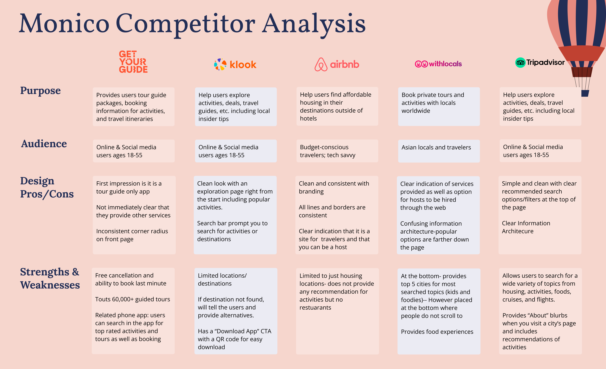

Finally after years of pandemic, normal traveling is resuming. How does planning and actually traveling
go again? What events are happening in this other country and are all the stores and restaurants even
there anymore?
That is a challenge Monico aimed to address. Following the design thinking process, we aimed to
develop a site and phone app that aids in planning trips or connecting with a local who can.
See my notes and reflections in these side notes over here!
We used affinity diagrams to generate open-ended research questions for user interviews. With our
refined list, we interviewed 5 individuals that regularly travel (pandemic aside). We asked questions
like: Tell me about some challenges you've experienced while traveling or planning a trip. How was
navigating in a foreign country? Any challenges communicating with locals? Walk me through your planning
process.

An initial finding from our interviews:
Our users like to know where locals go and what events are happening.
We followed up with conducting 200 Maze surveys to collect feedback on app and website features.
Initially, we thought of creating a translation or language app, but ultimately decided to use the
interviews to explore the user's challenges and needs first instead of assuming what they needed.
Interviews were completed via telephone and Microsoft Teams video call.

Returning to the affinity diagram, our team first categorized answers based on questions we asked then
grouped them into major topics. Using this map, we developed our key insights:
Our remote team conducted our gathering and analysis virtually via Figma & Figjam.
Our research revealed some surprising and humbling data:
Our users did not feel the need for learning a language when traveling abroad and did not encounter
any challenges communicating with locals as we had originally thought.
With our extensive research completed, it was time to define who our users were. We synthesized all the
interview data and created a user persona.


This persona was helpful in reminding us who we are designing for and to put our opinions aside.
Our team needed to redefine our research question based on our findings. We determined our new goal was
to answer this: "How might we provide insider tips from locals to improve travel experiences for our
users?".
We also conducted a competitor analysis to compare current design and content layouts of indirect
and direct competitors.

The competitor analysis helped us determine what layouts were user-friendly and what issues we should avoid as we designed our website.
Our team used some "How Might We" questions to define . This included: How might we incorporate all of
our users needs (safety and knowledge of events) into one cohesive service? How might we design our
layouts so our user can search for what they need?


During the following few weeks, we used these questions to guide our wireframing and prototyping.